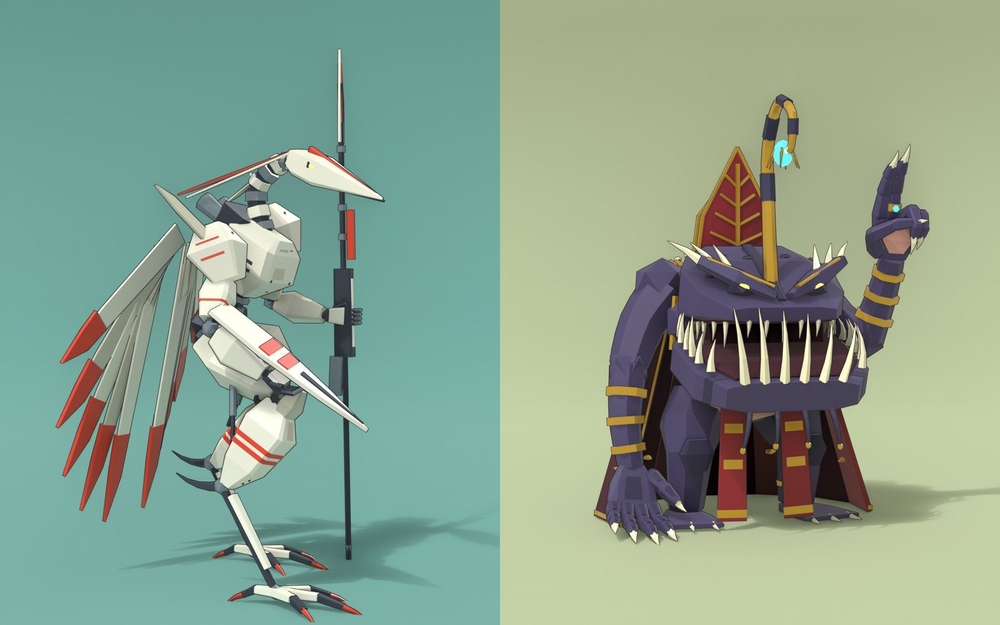
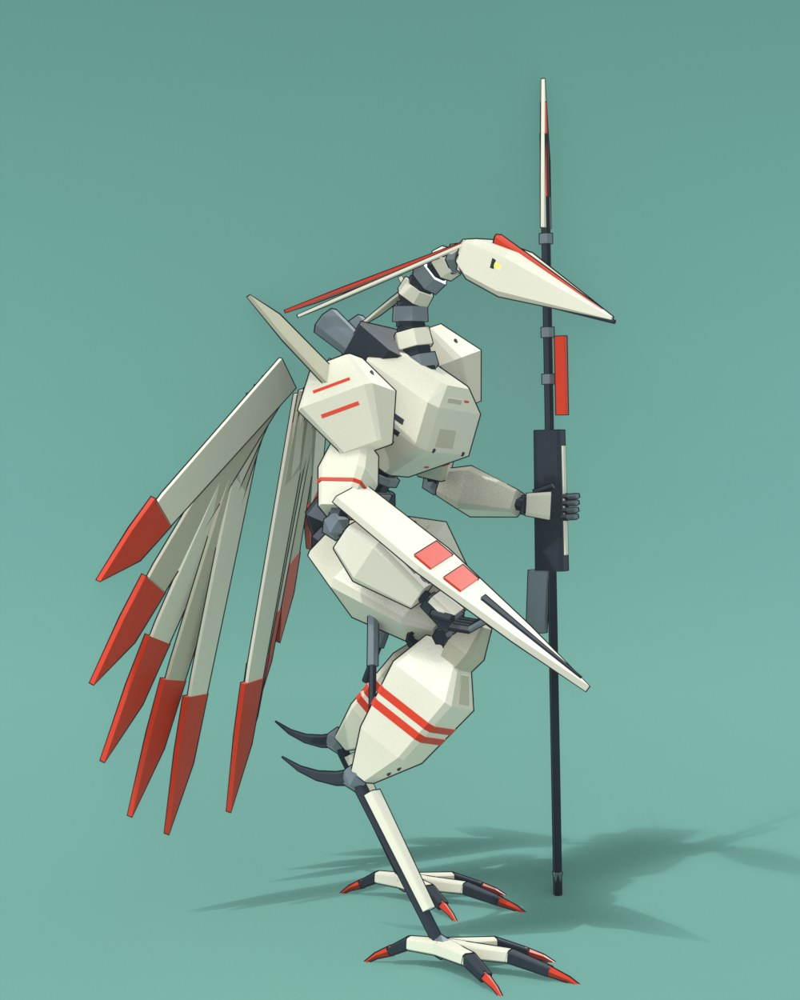
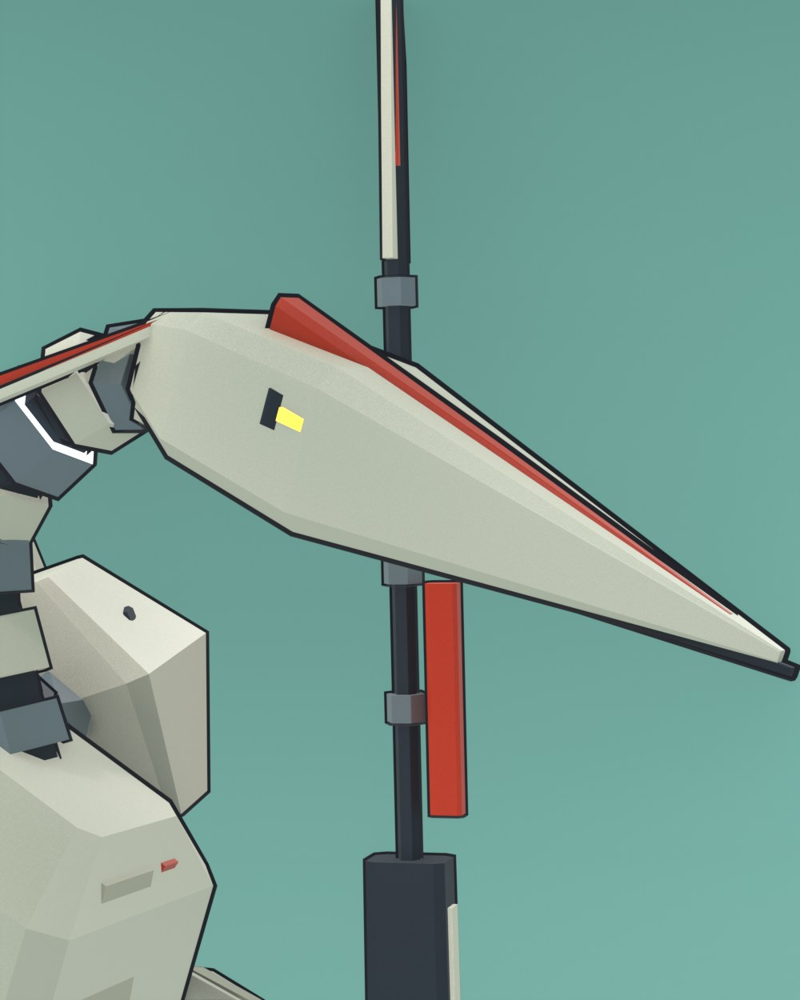
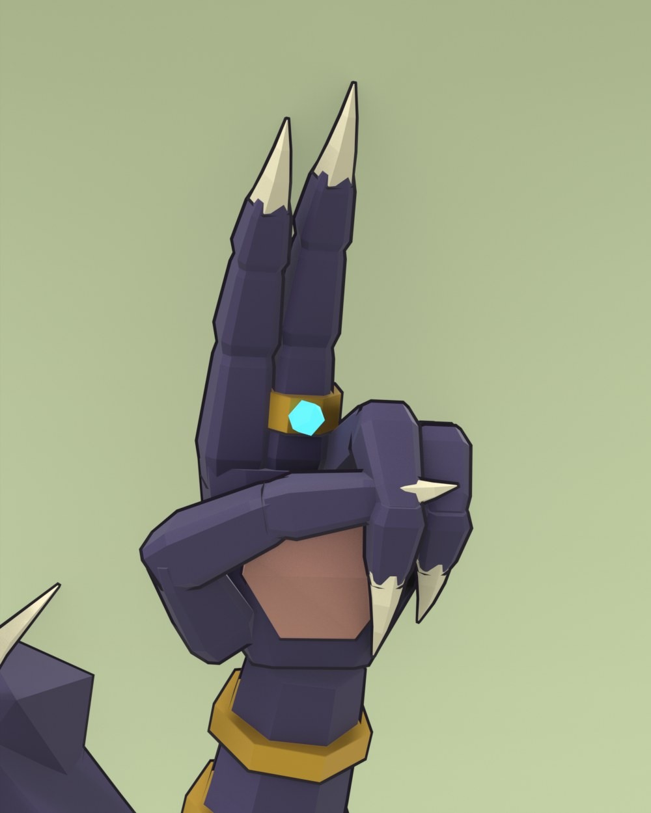
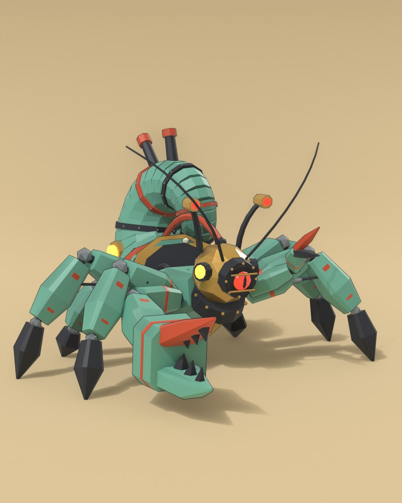
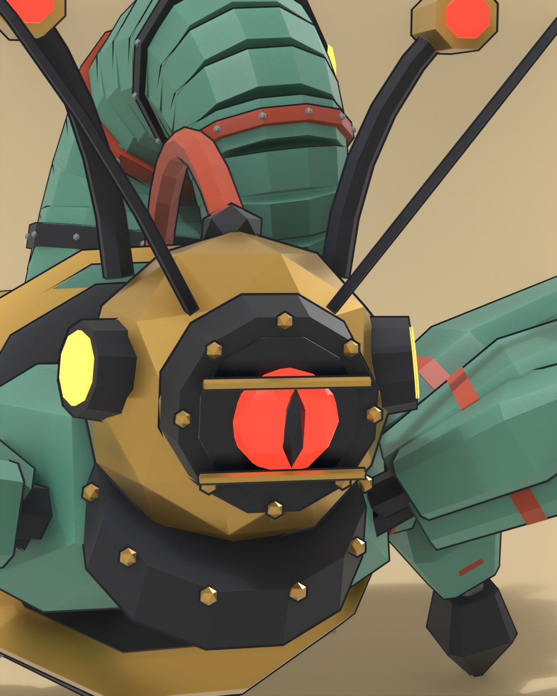
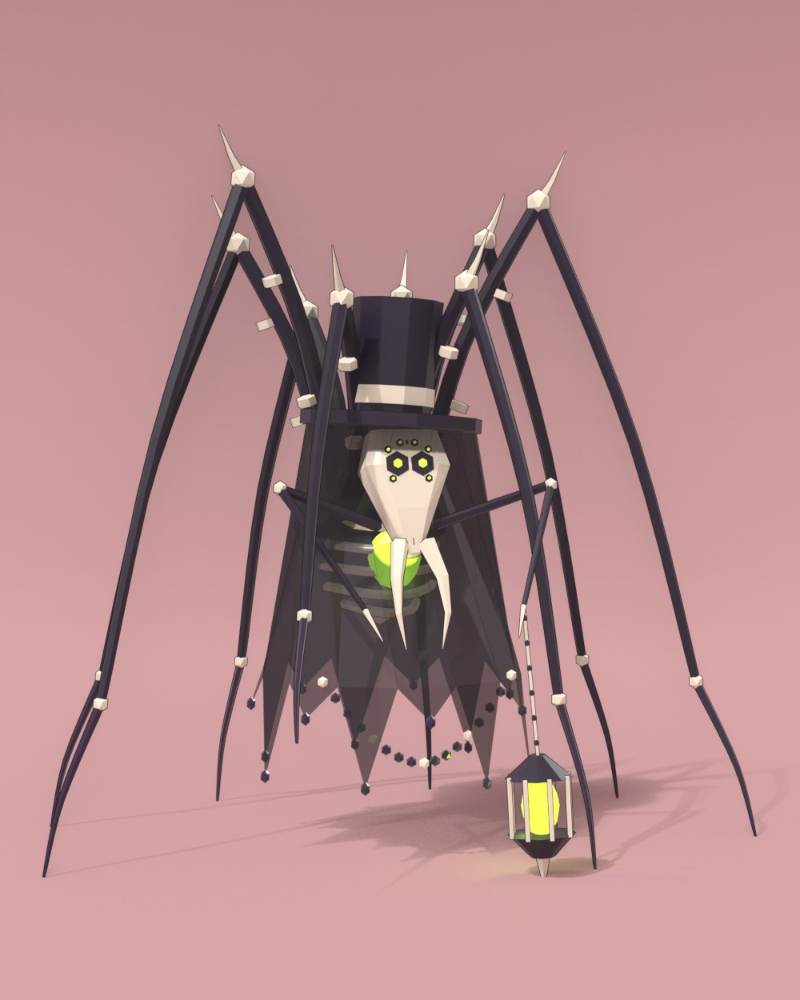
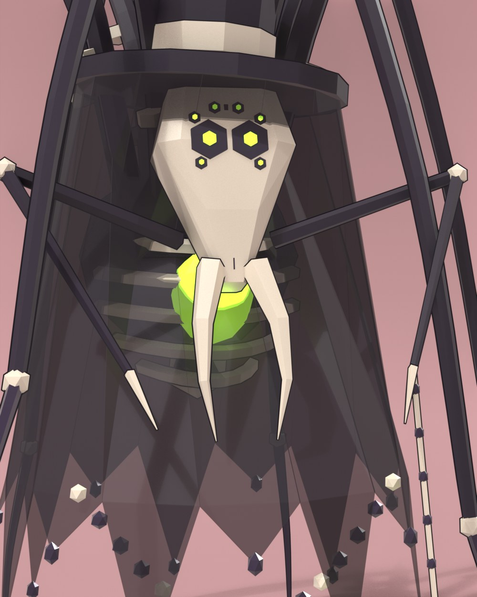

hullforge
2026

the brief
Dani asked for monster and mecha figures made the way the monster girls are made, but from scratch, sharing none of their pieces. So these have a kit of their own. The girls have lofted bodies and faces projected onto the head. Here every part is a hard separate hull mounted on a jointed frame, and any face is built out of physical pieces, with ink outlines around all of it.
Looking at Dani's reference library at full size helped a lot, because the thumbnails had hidden how much the good mechs rely on huge shells over tiny exposed joints. The rings of gold come from there too, for rhythm along a limb.
ardea

The mecha half of the first pair, hunched forward as a heron is when it hunts, with the neck pulled back in an S. The stilt legs and the big shells above them make the shell-over-joint idea very plain. The lance-rifle stands alongside and the wing blades are dipped in red. The profile is its best angle.

lophia

The monster half of the pair, with crooked needle teeth in an underbite under a heavy angry brow. The glowing lure curls over into a bishop's crozier, the mitre is made of fishbone and the cope reaches the floor. We asked Dani whether this pair should lean feminine like the rest of the series, and the answer was to stay creature-like.

The first hands were small pink fans, and Dani said they looked awful and had to be redone before anything else happened. They came back as jointed, armoured fingers with bone claws, heavy enough for the arms they sit on. One hand now drags on the floor with its fingers splayed, and that's the better of the two.

The other hand is raised in a blessing with the thumb folded across and a ring on the middle finger. The two raised fingers part slightly at the tips, so at a glance it can look a little like a peace sign.


pagura

We wanted the second pair to be the opposite of the first, so one is wide and heavy and the other is all thin legs. Pagura is the heavy one, a diving mech hauling a riveted spiral shell, with copper gone green and a brass helmet where the head should be.


opilia

A harvestman on high stilts, dressed for a funeral, with a veil falling from the top hat and a heart burning through the ribs. The censer swings from one thin arm on a long chain.



Dani liked these two enough to ask for chimera-girl versions in the old monster-girl style. Those are on the chimeras page, built on the older kit, while these stayed as they are.
- blender
- python
- claude